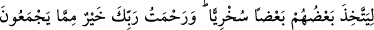
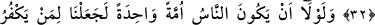
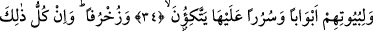

RABBİNİN RAHMETİNİ
ONLAR MI PAYLAŞTIRIYORLAR?
26. Bir zaman İbrahim, babasına ve kavmine demişti ki: Ben sizin
taptıklarınızdan uzağım.
27. Ben yalnız beni yaratana taparım. Çünkü O, beni doğru yola iletecektir.
28. Bu sözü, ardından geleceklere devamlı kalacak bir miras olarak bıraktı ki,
insanlar (onun dînine) dönsünler.
29. Doğrusu bunları da atalarını da kendilerine hak ve onu açıklayan bir
peygamber gelinceye kadar geçindirdim.
30. Fakat kendilerine hak gelince: Bu bir büyüdür, biz onu tanımıyoruz, dediler.
31. Ve dediler ki: Bu Kur’an iki şehirden bir büyük adama indirilse olmaz mıydı?
32. Rabbinin rahmetini onlar mı paylaştırıyorlar? Dünya hayatında onların
geçimliklerini aralarında biz paylaştırdık. Birbirlerine iş gördürmeleri için kimini
ötekine derecelerle üstün kıldık. Rabbinin rahmeti onların biriktirdikleri şeylerden
daha hayırlıdır.
33. Şâyet insanların küfürde birleşmiş bir tek ümmet olması (tehlikesi)
bulunmasaydı, Rahmân’ı inkâr edenlerin evlerinin tavanlarını ve çıkacakları
merdivenleri gümüşten yapardık.